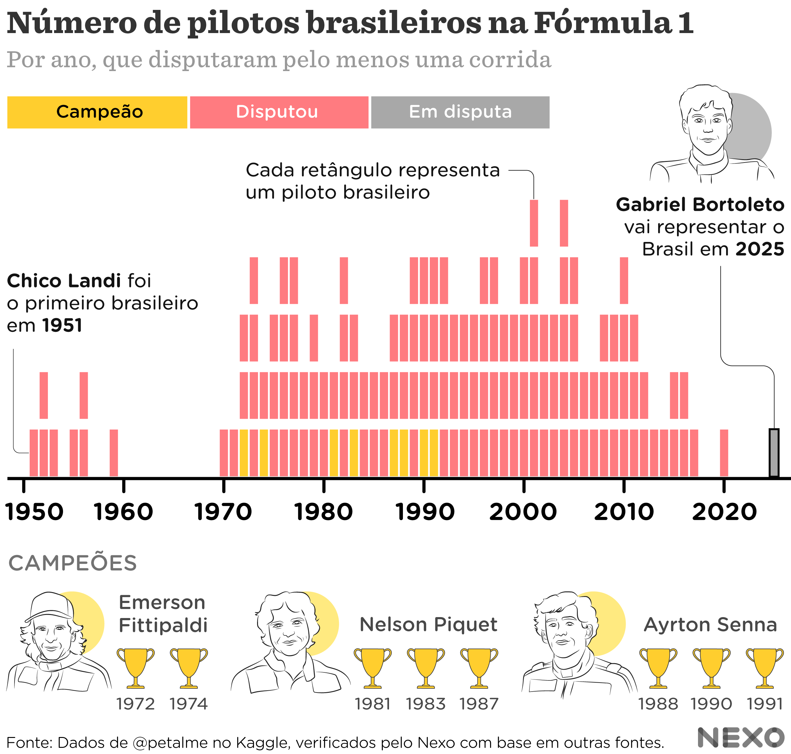
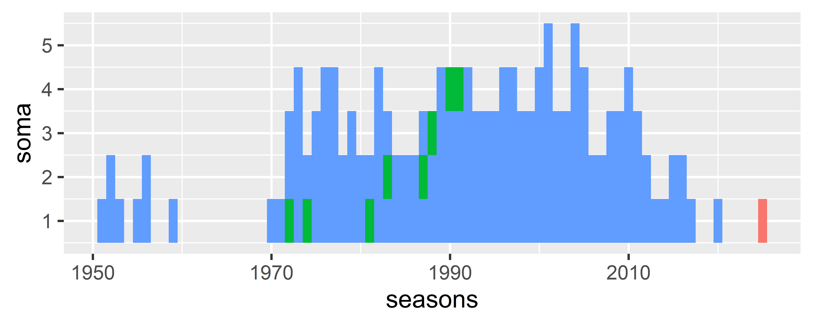
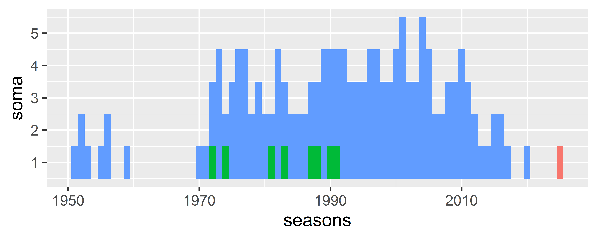
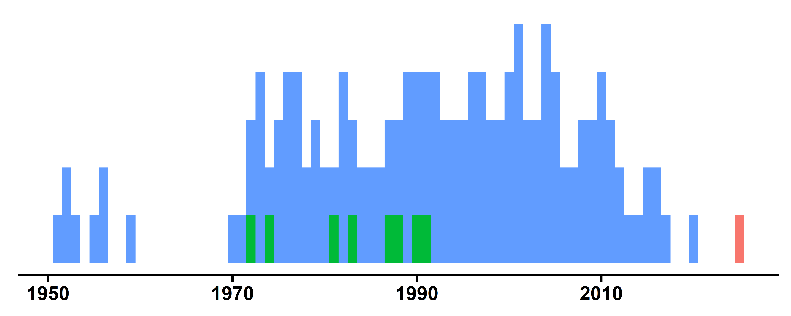
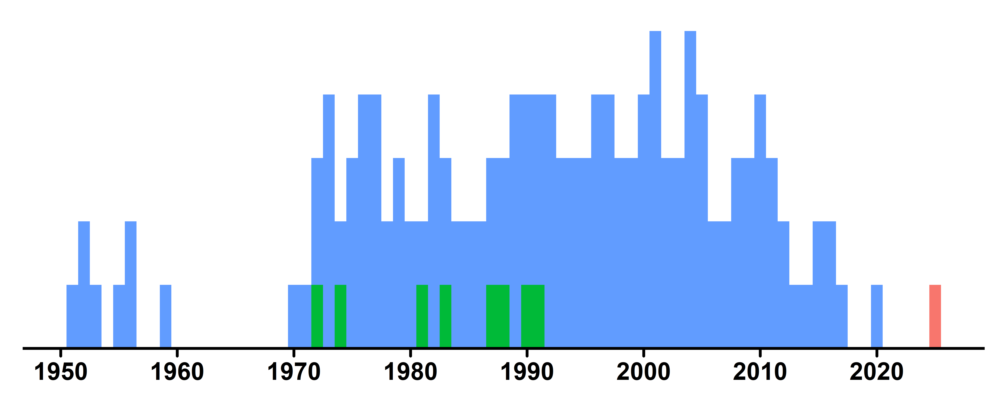
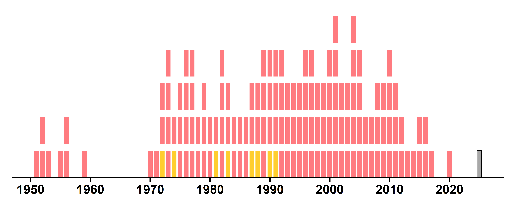

library(readr) #baixar dados csv
library(janitor) #limpeza dos dados
library(dplyr) #manipulação dos dados
library(tidyr) #tratamento dos dados
library(stringr) #trabalhar com strings/texto
library(ggplot2) #gráficosDecifrando gráficos #1
tutorial
dataviz
ggplot2
Do Jornal para o R

Como isso foi feito?
Todo dia vemos gráficos nos jornais, mas nem sempre sabemos como eles foram feitos. De onde vieram os dados? Como foram tratados? E será que dá para recriá-los usando o R?
Nesta série, vou pegar gráficos publicados nos principais jornais e recriá-los do zero usando R, tidyverse e ggplot2. Vou mostrar como encontrar os dados, organizá-los e gerar visualizações que chegam o mais próximo possível do original – tudo de forma transparente e didática. Sim! Vamos fazer e aprender juntos!
E tem mais: todo o código e dados utilizados estarão disponíveis e comentados (clique nos números abaixo de cada conjunto de código!). E por estarmos trabalhando com uma linguagem de programação, todos vão obter o mesmo resultado ao final do script.
Acompanhe a série e veja como transformar dados brutos em visualizações incríveis!
#1 - Pilotos brasileiros na F1 (Nexo Jornal)
Vamos começar com um gráfico publicado recentemente pelo Nexo Jornal: O número de brasileiros na Fórmula 1 ao longo dos anos

A equipe do Nexo é muito gente boa e sempre busca explicar melhor como é o trabalho deles, que você pode conferir na série de posts Nos Eixos. Eles utilizam o R para trabalhar com os dados e gerar os gráficos, e o Illustrator para retoques finais.
Como ficaremos apenas no R, vamos focar na construção do gráfico em si (retângulos/tiles e eixo), sem as ilustrações no entorno.
Obtendo os dados
Segundo a fonte do gráfico, os dados foram obtidos pela plataforma Kaggle (utilizada para competições de Big Data), e podemos ver neste link: Kaggle
Primeiro vamos carregar os pacotes necessários
Agora vamos baixar a tabela disponibilizado no site e salvar com o nome F1Drivers_Dataset.csv dentro de uma pasta chamada data. Pronto, agora podemos importar os dados.
pilotos <- readr::read_csv("data/F1Drivers_Dataset.csv")Caramba! São 868 pilotos e 22 variáveis!
Trabalhando com os dados
Mas veja que os nomes das variáveis tem letras maiúsculas e espaços (Championship Years). Vamos padronizar para snake_casecom o pacote {janitor}. Vamos salvar cada passo em um novo objeto para ficar mais fácil de acompanhar.
pilotos_clean <- janitor::clean_names(pilotos)Vamos filtrar apenas os brasileiros e analisar este dataset
pilotos_br <- pilotos_clean |>
dplyr::filter(nationality == "Brazil")
pilotos_br# A tibble: 32 × 22
driver nationality seasons championships race_entries race_starts
<chr> <chr> <chr> <dbl> <dbl> <dbl>
1 Rubens Barrichello Brazil [1993,… 0 326 322
2 Enrique Bernoldi Brazil [2001,… 0 29 28
3 Gino Bianco Brazil [1952] 0 4 4
4 Raul Boesel Brazil [1982,… 0 30 23
5 Luiz Bueno Brazil [1973] 0 1 1
6 Luciano Burti Brazil [2000,… 0 15 14
7 Pedro Diniz Brazil [1995,… 0 99 98
8 Christian Fittipa… Brazil [1992,… 0 43 40
9 Emerson Fittipaldi Brazil [1970,… 2 149 144
10 Pietro Fittipaldi Brazil [2020] 0 2 2
# ℹ 22 more rows
# ℹ 16 more variables: pole_positions <dbl>, race_wins <dbl>, podiums <dbl>,
# fastest_laps <dbl>, points <dbl>, active <lgl>, championship_years <chr>,
# decade <dbl>, pole_rate <dbl>, start_rate <dbl>, win_rate <dbl>,
# podium_rate <dbl>, fast_lap_rate <dbl>, points_per_entry <dbl>,
# years_active <dbl>, champion <lgl>Neste dataset não temos o Gabriel Bortoleto que vai representar o Brasil em 2025. Vamos adicioná-lo com dplyr::add_row() e apenas as variáveis que vamos precisar.
pilotos_br2 <- pilotos_br |>
dplyr::add_row(
driver = "Gabriel Bortoleto",
nationality = "Brazil",
seasons = "[2025]"
)São 33 pilotos brasileiros, aí no meio devem estar os campeões Emerson Fittipaldi, Nelson Piquet e Ayrton Senna. Já já vamos chegar lá!
Agora vamos criar 2 datasets, um para todas as temporadas de todos os pilotos, e outro para as temporadas em que algum foi campeão.
Para o primeiro, vamos selecionar as colunas necessárias e salvar em pilotos_br3
driver(Nome do piloto)nationality(Nacionalidade)seasons(Temporadas)championship_years(Anos em que foi campeão)
pilotos_br3 <- pilotos_br2 |>
dplyr::select(driver, nationality, seasons,
championship_years)Mas veja que precisamos quebrar a coluna seasons para cada valor ficar em uma linha, obtendo um formato tidy, que utilizaremos no ggplot2 mais pra frente. Para isso vamos usar a função tidyr::separate_longer_delim() que nos permite separar uma string por algum delimitador (nesse caso ,). E vamos também remover os colchetes [ ou ] que ficarem perdidos utilizando o pacote {stringr} e transformar essa variável em numérica.
pilotos_br4 <- pilotos_br3 |>
1 tidyr::separate_longer_delim(
cols = c(seasons),
delim = ", ") |>
2 dplyr::mutate(
seasons = stringr::str_remove_all(seasons, "\\[|\\]"),
seasons = as.numeric(seasons)
)- 1
-
Separa os valores na coluna
seasonsem múltiplas linhas, usando a vírgula seguida de espaço como delimitador. - 2
-
Remove os colchetes
[ou]e transforma a variávelseasonsem numérica.
Agora vamos utilizar este dataset para criar o pilotos_campeoes. Vamos usar novamente o tidyr::separate_longer_delim(), mas dessa vez com a variável championship_years. Isso vai gerar linhas duplicadas, pois a função busca criar todas combinações entre as linhas. Como aqui queremos apenas os campeões nos respectivos anos, vamos filtrar as temporadas (seasons) que são iguais às temporadas vitoriosas (championship_years). Por fim, vamos criar uma coluna dizendo que eles foram campeões neste ano
pilotos_campeoes <- pilotos_br4 |>
1 tidyr::separate_longer_delim(
cols = c(championship_years),
delim = ", ") |>
2 dplyr::mutate(
championship_years = stringr::str_remove_all(
championship_years,
"\\[|\\]")) |>
3 filter(seasons == championship_years) |>
4 mutate(
campeao = TRUE
)- 1
-
Separa os valores na coluna
championship_yearsem múltiplas linhas, usando a vírgula seguida de espaço como delimitador. - 2
-
Remove os colchetes
[ou]e transforma a variávelseasonsem numérica. - 3
-
Filtra
seasonsiguais àchampionship_years. - 4
-
Cria uma coluna
campeaocom valorTRUEpara estes pilotos.
Agora só precisamos combinar o dataset pilotos_campeoes com o pilotos_br4 utilizando o left_join(). Aqui vamos falar para utilizar as colunas driver e seasons como guias do join
pilotos_br5 <- pilotos_br4 |>
dplyr::left_join(
pilotos_campeoes,
1 by = c("driver", "seasons")
)- 1
- Define quais variávels serão combinadas de ambos os datasets.
Pronto! Temos toda a informação que precisamos. Vamos aos gráficos!
Criando o gráfico
Logo de cara, vemos que o gráfico do Nexo é um tile plot, em que utilizamos a função geom_tile().
Para isso, precisamos contar o número de pilotos em cada ano, já que o eixo Y apresenta a soma de pilotos. Para isso podemos agrupar nosso dataset por temporada (group_by()) e contar o numero de linhas/pilotos (row_number())
soma_pilotos <- pilotos_br5 |>
1 dplyr::group_by(seasons) |>
2 dplyr::mutate(soma = dplyr::row_number())- 1
-
Agrupa os dados por temporada (
seasons) - 2
- Conta o número de linhas (nesse caso, pilotos) em cada grupo
Agora vamos plotar! Lembre-se que precisamos utilizar cores de preenchimento diferentes para campeões e também para a temporada atual!
1soma_pilotos |>
2 ggplot(aes(x = seasons, y = soma))+
3 geom_tile(
4 aes(fill = dplyr::case_when(
campeao == TRUE ~ "campeão",
seasons == 2025 ~ "atual",
TRUE ~ "normal"
))
)+
5 theme(
legend.position = "none"
)- 1
-
Pegamos
soma_pilotose passamos adiante com o pipe. - 2
-
Criamos um gráfico com
ggplot(), ondeseasonsdefine o eixo X esomadefine o eixo Y. - 3
-
Adicionamos
geom_tile(), que cria um mosaico de retângulos para representar os valores. - 4
-
Definimos a cor de preenchimento com
case_when(), categorizando os tiles como “campeão”, “atual” ou “normal”. - 5
-
Ajustamos o tema para remover a legenda
(legend.position = "none"), deixando o gráfico mais limpo.

Quase! Veja que os campeões não estão na base, como na figura original. Para isso precisamos ordenar (arrange()) o dataset para que os campeões apareçam primeiro na contagem de linhas. Vamos tentar novamente!
soma_pilotos <- pilotos_br5 |>
dplyr::group_by(seasons) |>
1 dplyr::arrange(campeao) |>
mutate(soma = dplyr::row_number())- 1
-
Ordena a coluna
campeao. Assim, valoresTRUEaparecem primeiro
Agora vamos plotar!
soma_pilotos |>
ggplot(aes(x = seasons, y = soma))+
geom_tile(
aes(fill = dplyr::case_when(campeao == TRUE ~ "campeão",
seasons == 2025 ~ "atual",
TRUE ~ "normal"))
)+
theme(
legend.position = "none"
)
Perfeito! Agora vem a parte mais legal. Deixar o gráfico bonito!
Vamos fazer uma checklist e ajustar tudo!
Começando pelo tema
soma_pilotos |>
ggplot(aes(x = seasons, y = soma))+
geom_tile(
aes(fill = dplyr::case_when(campeao == TRUE ~ "campeão",
seasons == 2025 ~ "atual",
TRUE ~ "normal"))
)+
1 theme_classic()+
theme(
2 legend.position = "none",
3 axis.line.y = element_blank(),
4 axis.ticks.x = element_line(
lineend = "round",
color = "black"
),
5 axis.ticks.y = element_blank(),
6 axis.title = element_blank(),
7 axis.text.y = element_blank(),
8 axis.text.x = element_text(
face = "bold",
color = "black"
)
)- 1
-
theme_classic(): Remove as grades de fundo e simplifica o visual do gráfico. - 2
-
legend.position = "none": Esconde a legenda do gráfico. - 3
-
axis.line.y = element_blank(): Remove a linha do eixo Y. - 4
-
axis.ticks.x: Personaliza os ticks (marcas) do eixo X, deixando-os arredondados e pretos. - 5
-
axis.ticks.y = element_blank(): Remove os ticks do eixo Y. - 6
-
axis.title = element_blank(): Remove os títulos dos eixos. - 7
-
axis.text.y = element_blank(): Esconde os rótulos do eixo Y. - 8
-
axis.text.x: Deixa os rótulos do eixo X em negrito e pretos.

✅ Gráfico clean (fundo branco, apenas eixo x, etc)
Agora os eixos
soma_pilotos |>
ggplot(aes(x = seasons, y = soma))+
geom_tile(
aes(fill = dplyr::case_when(campeao == TRUE ~ "campeão",
seasons == 2025 ~ "atual",
TRUE ~ "normal"))
)+
1 scale_x_continuous(
breaks = seq(1950, 2020, 10)
)+
2 scale_y_continuous(
expand = expansion(mult = c(0, 0.05))
)+
theme_classic()+
theme(
legend.position = "none",
axis.line.y = element_blank(),
axis.ticks.x = element_line(lineend = "round", color = "black"),
axis.ticks.y = element_blank(),
axis.title = element_blank(),
axis.text.y = element_blank(),
axis.text.x = element_text(face = "bold", color = "black")
)- 1
- Define os pontos de quebra (ticks) do eixo X a cada 10 anos, de 1950 a 2020. Isso deixa o eixo X mais organizado.
- 2
- Ajusta o espaçamento do eixo Y a partir de uma multiplicação. O primeiro valor (0) remove espaço na parte inferior. O segundo valor (0.05) adiciona um pequeno espaço na parte superior (5%), evitando que os retângulos (tiles) fiquem colados à borda superior.

✅ Eixo x de 10 em 10 anos
✅ Sem espaço entre o gráfico e eixo x
Falta ainda ajustarmos os retângulos
soma_pilotos |>
ggplot(aes(x = seasons, y = soma))+
geom_tile(
aes(fill = dplyr::case_when(campeao == TRUE ~ "campeão",
seasons == 2025 ~ "atual",
TRUE ~ "normal"),
1 linewidth = ifelse(driver == "Gabriel Bortoleto", 0.3, NA)
),
2 color = "black",
3 width = 0.8,
height = 0.8
)+
scale_x_continuous(
breaks = seq(1950, 2020, 10)
)+
scale_y_continuous(
expand = expansion(mult = c(0, 0.05))
)+
4 scale_linewidth_identity() +
5 scale_fill_manual(
values = c(
"campeão" = "#ffce2e",
"normal" = "#ff7b80",
"atual" = "#a8a8a8"
)
)+
theme_classic()+
theme(
legend.position = "none",
axis.line.y = element_blank(),
axis.ticks.x = element_line(lineend = "round", color = "black"),
axis.ticks.y = element_blank(),
axis.title = element_blank(),
axis.text.y = element_blank(),
axis.text.x = element_text(face = "bold", color = "black"),
plot.background = element_rect(fill = NA, color = NA),
panel.background = element_rect(fill = NA, color = NA)
)- 1
-
Define
linewidth, para que o retângulo (tile) do Gabriel Bortoleto tenha uma borda mais espessa (0.3), enquanto os demais têm borda invisível (NA). - 2
-
Define
color = "black"para que as bordas dos tiles fiquem pretas (quando hourve borda). - 3
-
Controla o tamanho dos tiles com
width = 0.8,height = 0.8, reduzindo ligeiramente o tamanho para criar uma separação entre os blocos. - 4
-
Usa
scale_linewidth_identity()para interpretar os valores de linewidth diretamente, sem precisar de uma escala mapeada. - 5
-
Define
scale_fill_manual(values = c(...))para atribuir cores personalizadas aos tiles: campeões em amarelo, normais em vermelho e a temporada atual em cinza.

Agora sim! Aprendemos como uma equipe de jornal chegou até este gráfico!
Espero que este post tenha sido útil para você! Se tiver alguma dúvida, sugestão ou crítica, mande um e-mail!